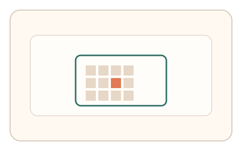
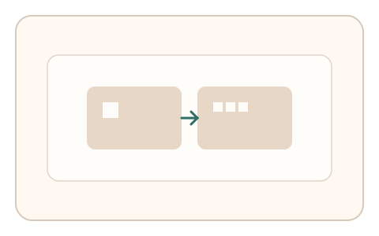
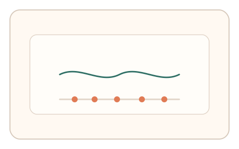

#132
E：双底座耦合 × 双信号 × 多阶段/双任务（认知偏置 + 生理/时域）
已扩展
全局‑局部切换‑节律点击
先测全局/局部偏好再进行节律点击，结合反应时与节律抖动进行判定。
概念原文
先判断全局/局部偏好，再跟随节拍点击，系统对反应时与节律抖动做群体基线比对。
将知觉偏置与节律稳定性耦合。
研究背景
全局‑局部加工存在稳定偏好（Navon 刺激），节律跟随反映感知‑运动同步能力。双任务可提供互补信号。
核心机制
- 呈现 Navon 刺激并要求全局/局部判断。
- 记录反应时差异与偏好。
- 进入节拍点击任务并记录节律抖动。
- 综合偏好与节律稳定性判定。
用户流程
- 步骤 1：用户完成几轮全局/局部判断。
- 步骤 2：跟随节拍进行点击。
- 步骤 3：系统比较反应时与节律抖动。
判定信号
全局‑局部反应时差
偏好会在切换中呈现稳定差异。
节律抖动（间隔方差）
人类节拍同步存在自然波动。
判定逻辑
反应时差与节律抖动需落在人类区间且彼此一致；过于恒定或无偏好判异常。
对抗面
- 脚本固定节拍间隔
- 重放历史点击序列
防御与缓解
- 随机化节拍速度与相位扰动
- 变换 Navon 图形与切换频率
- 加入意外停顿检测恢复
可达性与风险
提供视觉/触觉节拍提示与更慢节奏选项。
- 音频延迟导致节拍偏差
- 听力或注意力受限用户受影响
可视化状态

状态 1：全局/局部判断
Navon 图形触发全局‑局部加工。

状态 2：任务切换
全局与局部任务切换后进入节拍。

状态 3：节律抖动
记录节拍点击的时间抖动。
参考资料
Navon figure
说明全局‑局部加工偏好。
Sensorimotor synchronization
说明节拍同步与抖动。